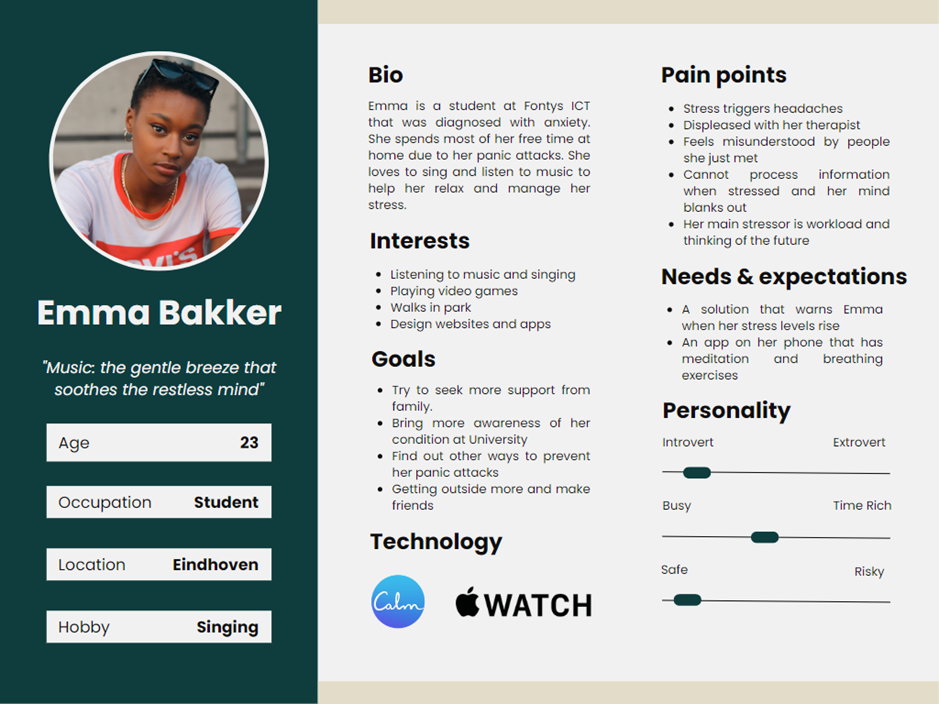
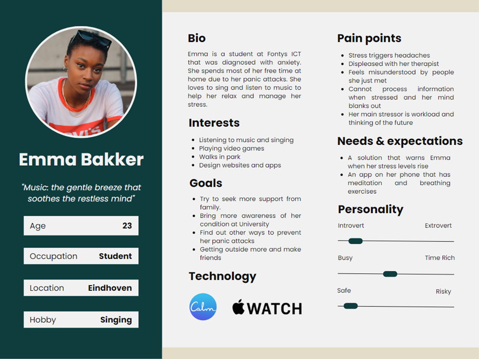
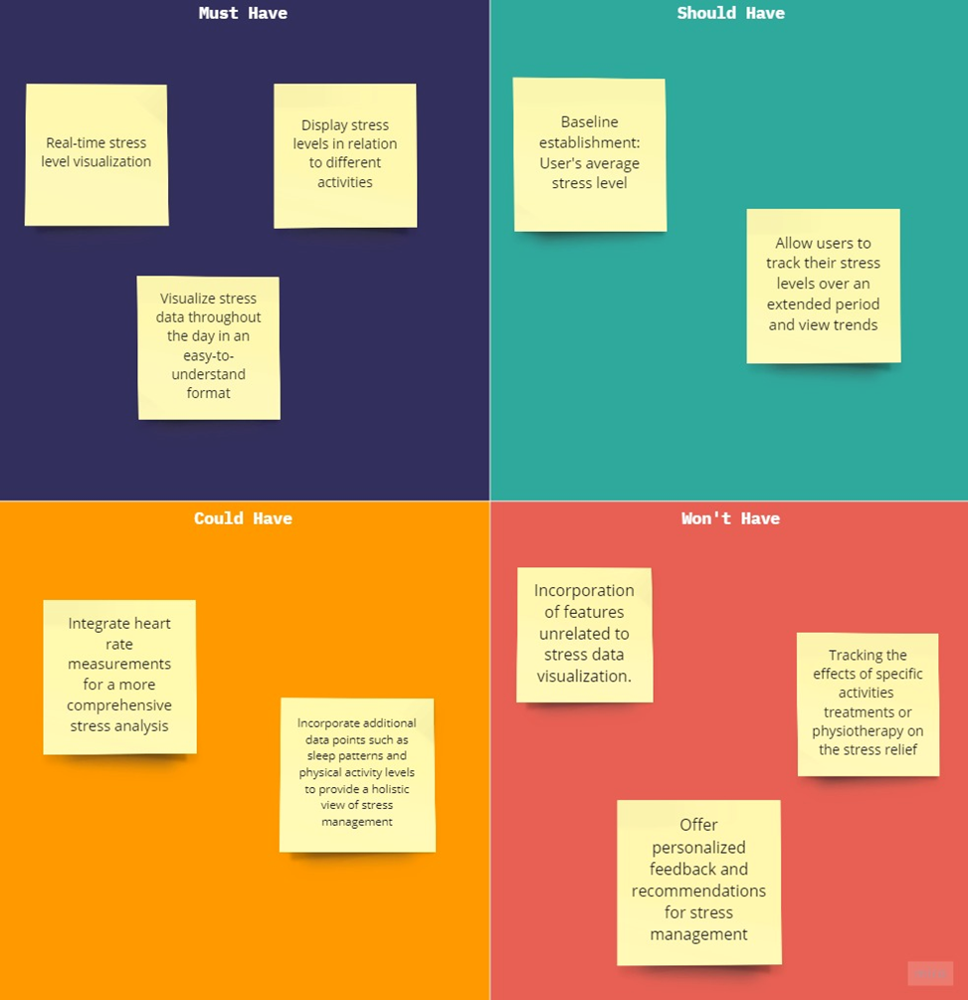
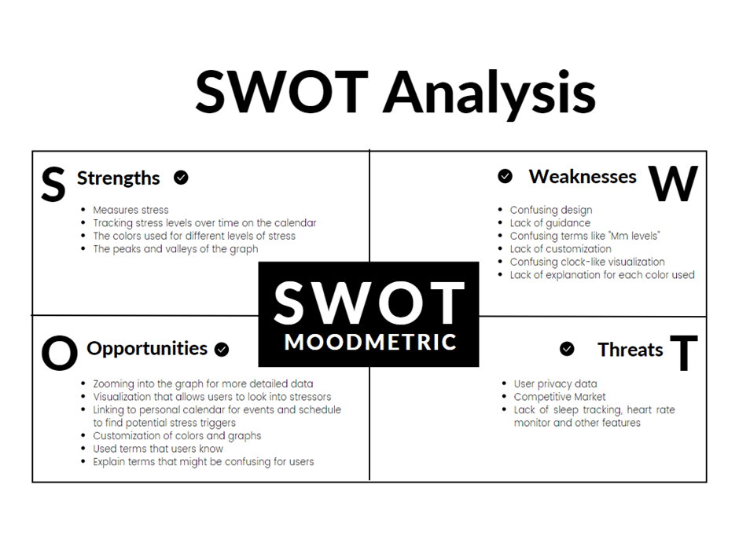
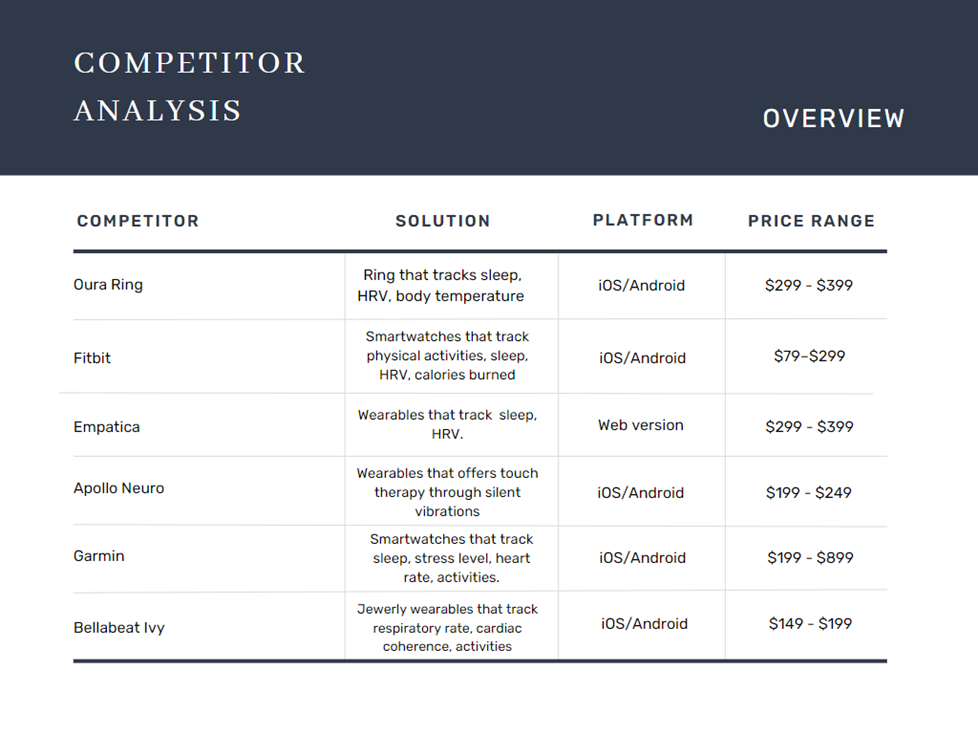

-
Introduction
During the research phase we concentrate on the empathize step of design thinking. The target audience of our group project are people with PPS (Physical Persistent Symptoms). To better understand our target audience each one of us conducted literature study.
-
Literature Study on Target Audience
CMD Method: Literature Study

Goal: To understand the target audience and to empathize with them. Our goal was to understand their daily life and if they feel misunderstood by doctors, family and friends.
Search engine: Google Scholar
Key words: Persistent physical symptoms, depression, Quality of life, Medically unexplained physical symptoms (MUPS), daily life, wearables.
Conclusion
In conclusion, Persistent Physical Symptoms (PPS), also known as Medically Unexplained Symptoms (MUS), is a condition characterized by long-term physical symptoms without identifiable medical causes. This literature review explores PPS across various medical fields and highlights the impact it has on individuals' physical and psychological well-being.
The studies found that many older adults with depression often experience physical symptoms like vague aches, fatigue, and digestive problems. These symptoms can be linked to underlying psychiatric issues. The severity of depression is related to the frequency of physical complaints. Older adults with generalized anxiety disorder also tend to have frequent physical symptoms. Patients with persistent unexplained physical symptoms face disability and often have other mental health problems.
It's important for healthcare providers to recognize and address these physical complaints, as they can significantly impact a patient's quality of life and healthcare costs. Patients with unexplained symptoms may have their own explanations and fears, and they value being listened to and understood by their healthcare providers.
In the future, wearable devices may offer a solution to help individuals with anxiety and depression. These devices can monitor moods and behaviors, providing a way for individuals to track and manage their stress levels. Overall, this study highlights the need for a holistic approach that considers both physical and mental well-being when caring for patients with persistent physical symptoms.
-
Secondary Field Research
Method: Secondary Field Research
Goal :After understanding what PPS is, we started field research on our Target Audience to deepen our understanding of our users, to know theirs needs, desires and pain points.
We received from two external research team members, Jesse and Fenne (Fontys Paramedical students) interviews that had participants suffering from PPS. Their scope was different than ours but we chose to analyze their interview because the clinic that initially planned to connect us with our target uses was at full capacity, due to other student researchers. Any interviews that provide insights about our target group, was valuable, which is why we translated and analysed their interviews.
Conclusion
Participants' pain points include chronic muscle tension and pain, which worsen after experiencing stress. They want to understand the reasons behind their pain, showing that they need a stress application that could show potential stressors. Participants are interested in monitoring their heart rate and stress levels, wanting an overview of their stress throughout the day. They also want to understand how different activities affect their stress levels and receive alerts when stress is high.
Each one of us had an interview to analyze. The following document contains the transcript and summary of the interview I analysed.
Following the secondary field research, our group put together all of our findings and feedback from the users interviewed in one Affinity Map.
-
Our Interviews
CMD Method: Interview
We conducted our own interviews to gain a deeper understanding of the target users’ experiences with PPS, stress and stress management practices and asking questions that are relevant to our project.
The interviews were conducted with the participant’s consent to record, ensuring accurate capturing of their insights. We interviewed 7 people in total.
Each one of us participated in the interviews, having different roles each time like speaker, observer and note taker. I was the interviewer in one interview that I also made a transcript for and analysed it.
After our interviews were done we gathered all the data and organized it in sections in a Affinity Map.
Conclusion
After our interviews, we gathered more information about our target users, their needs, pain points and struggles. When asked, the participants desire in a stress app features like personalized relaxation sounds, integration with calendars, reaching out for support, easy-to-understand data visualizations, stress journaling, and notifications.
-
Empathy Map
CMD Method: Empathy Map

Our team was split into two groups that worked on two empathy maps. The empathy maps are based on the Secondary Field Research.
Goal
The goal was to write down our insights and conclusions about our target users in a quick and understandable way. The Empathy Map has 4 sections: what the user says, does, feels and thinks.
-
Personas
CMD Method: Persona
With the help of our target user research we created together two personas to help us envision and empathize with our target audience.
 

-
User requirements and User Stories
CMD Method: List Requirements
Following the insights from research, a user requirement list was made to serve as a planning tool and checklist during the design phase:
1. A baseline establishment: user's average stress level
2.Real-time stress level visualization
3.Display stress levels in relation to different activities
4.Allow users to track their stress levels over an extended period and view trends
5.Visualize stress data throughout the day in an easy-to-understand format
6.Integrate HRV measurements for a more comprehensive stress analysis
7.Incorporate additional data points such as sleep patterns and activities
After having made these requirements, user stories were made :
1.As a user, I want the system to establish a baseline stress level for me, allowing me to compare my current stress levels to my individual normal range and track my progress in managing stress.
2.As a user, I want the system to visualize the measured stress level in real-time so that I can be aware of my stress levels and take appropriate actions
3.As a user, I want the system to display how different activities affect my stress levels, so I can identify activities that contribute to stress
4.As a user, I want to track my stress levels over an extended period of time and view trends, so that I can gain insights into my overall stress patterns and identify any long-term changes or trends that may be impacting my well-being
5.As a user, I want the system to visualize my stress data in an easy-to-understand way
6.As a user, I would like the system to integrate heart rate measurements, as it can provide additional insights into relation between my stress level and heart beat
7.As a user, I would appreciate if the system could incorporate other data points, such as sleep patterns and activities to provide a view of my stress management journey
-
MOSCOW Analysis
The MOSCOW technique categorizes requirements into four distinct categories: Must-have, Should-have, Could-have, and Won't-have. This technique helps guide the prioritization process, ensuring that essential features are addressed first while allowing flexibility for additional functionalities. When applied to the development of a data visualization application for people with PPS, the MOSCOW analysis becomes an invaluable tool for understanding and prioritizing the needs of users. At first, we had an extensive set of requirements, but we eventually focused solely on stress data visualization.

-
Research on New Ways to Visualize Data
CMD Method: Literature Study
Goal: Our goal is to come up with new ways to display stress data. The focus of this literature study is to look into different industries that use graphs and get inspired by them.
Search engine: Google Scholar
Key words: energy consumptions data visualizationWe finalized the initial research phase with in-depth data visualization research, where we explored data visualization in different industries and good and bad practices. We tried to look into industries that gather big amount of data and visualize it to regular users, which very much aligns with our project goal, which visualize stress data in easily understandable way. The industries we look into were Energy, Finance, Aviation, Sports, Logistics and Healthcare.
I focused on the Energy consumption data visualization and put my findings in the following document.
-
SWOT Analysis
Since our project foundation is the Moodmetric we asked our interviewers their opinions on the app. Based on the results I created a SWOT Analysis to summarize the strengths and weaknesses of Moodmetric.

-
Competitor Analysis
CMD Method: Competitive Analysis
When conducting the competitor analysis our main focus was the data visualization of the apps and see if the wearables track stress levels or not. We also looked into reviews and picked valuable information from their users. We chose globally popular solutions that have wearables and applications to track health data.
Conclusion
